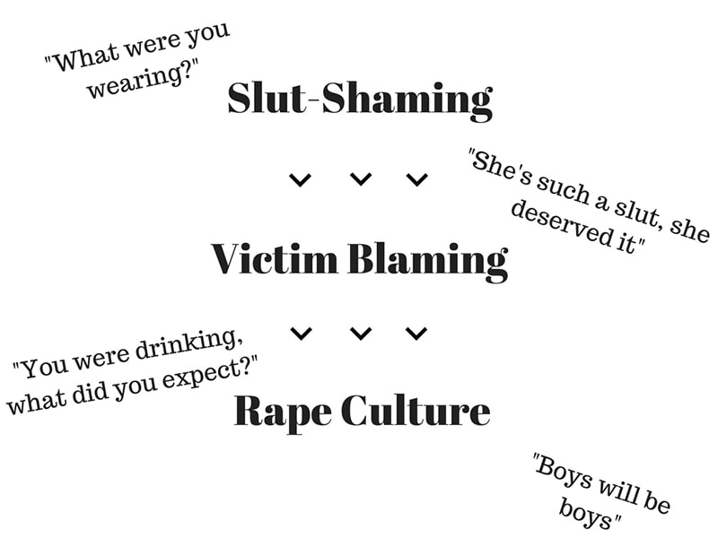

I am deeply disturbed by the recent events would be an understatement. The Hathras incident has certainly shaken me. Am I surprised that the situation is already dying down? No. It has been happening every year. The crime rate increases and becomes more heinous. But never have I ever seen anything legal. Why? I blame the lack of rules. It is evident that a candle march and justice rally is not putting an end to the atrocities a woman is facing.
There needs to be an intervention, and it is possible by law. Until external forces act upon this body, it will simply continue its motion, which is terrifying. I will be talking about the lack of governance in one of my future blogs, but I will stick to the topic in this one.
Following the Hathras case, various comments by several prominent personalities were brought to light. And it disgusted me to even read through all of it. The fact that people in power dare to spew such balderdash and get away with it, sickens me. Rapes happen because rapists exist. Unconsented sexual activity is considered as rape. So obviously, how on earth will anyone in their right mind still blame the victim for the crime that has befallen them? It is very easy in our nation.
Her clothes, her sobriety, her makeup, and her surrounding has got nothing to do with her wanting it! It is astounding how it is easy to blame the time of the day to justify a crime. A criminal should not be allowed to get away with this inhumane act. What disheartens me more is how many rape cases are left unreported because of victim-blaming. And honestly, anyone who defends the perpetrator after the heinous crime is an equal threat. It is ridiculous to defend them and pass preposterous comments.

The constant blame being pushed on the victim inhibits them from speaking about the crime that has befallen them. They live under the constant fear of character assassination and remain silent. Several cases have gone unreported because of this. It is shameful to even look at how these actions are being defended. Even when the cases are reported, it is disgusting how the focus is on what the victim was wearing or doing rather than the perpetrator who did not have minimal humanity and acted upon his carnal desires. The media are subtly encouraging this act of victim-blaming which truly makes me question the entire existence of the field.
The ones who are supposed to report the wrongdoing are either forced to shut up with the excess amount they are paid or try to increase their TRP ratings by raging debates and wars by constant victim-blaming. Because anyone with minimal sense will argue against it and that in turn will garner views to their channel. To be very frank, it is as dirty and cheap as it can get. The whole point is lost and the trauma that the victim and family undergo is beyond imagination. And this is just the beginning. When you move away from the major media field and comments passed by several prominent personalities, you face the ordinary people which includes the neighbors, friends, and relatives.
And I feel this is where the victim slowly starts losing themselves to the trauma. And why is that? The patriarchy is so deeply ingrained that sexual assault seems like it is indeed the fault of the victim despite not consenting for it. And it has been happening for so long. The phrase “log kya kahenge” which translates to “what will people talk”, is the fuel to the whole shameful act of victim-blaming.
I am scared to walk out alone in the broad daylight. I am concerned about what I wear and how I present myself because I do not want to be mistaken for wanting it. I do not want to be just another India’s daughter who will be long forgotten before another girl becomes the prey. I depend on the masculinity of my male friends to remain safe and alive. That is how much my freedom extends up to and the price for this safety? Slut shamming. Do you see the pattern? You are always blamed.
I have been asked several times why I have been vocal about these crimes when I am not the victim. Because she is one of us. The minimal humanity in me and a strong sense of moral will not let me be silent about this. It is very simple. I would want someone to plead my case if I were the victim. In this chase behind character assassination and TRP ratings what is forgotten is justice. And it is so delayed that it is right down disappointing to have a body of law governing the state.
Remember, the world only exists until you have that little humanity left in you. Even if it is just one person, stand for what is right and ensure justice is delivered. Get your facts straight and focus on ensuring the crime does not go unpunished. Do not pay heed to what people rattle on about, because until they have a mouth with a tongue, they always will. Step out, be loud, change begins with you.
Until then, be vocal, be you, and be safe.
Love
M